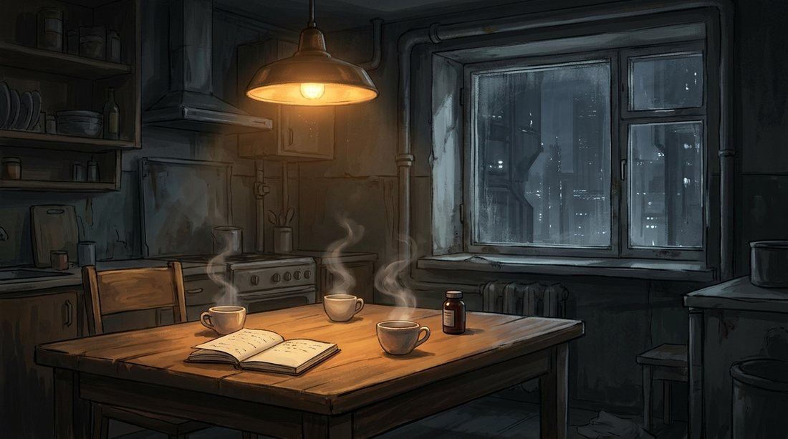

stages 데이터를 불러오는 중입니다…
2087.11 · 경계 세관 제7창구 · D1~D30
단어 세관
WORD CUSTOMS — 되찾은 말들
"오늘부터 '자유'와 70% 이상 가까운 단어는 압수입니다."
말이 지워지는 나라의 세관원이 되어, 규칙집과 유사도 측정기로 편지와 노래와 일기를 심사한다.
하람이 부르는 호칭:
아빠
엄마
하람이 플레이어를 부르는 호칭입니다. 저녁 대화 등에서 등장인물들이 부르는 호칭이 바뀝니다.
새 근무 시작 (D1)
이어하기
분기 타임라인 · 엔딩(20)
복원 사전
설정
날짜 직접 선택 (D1 ~ D30 · 챕터 점프)
[NULL 국가 언어관리국 정기 방송 — 2057년 아카이브]
REC ●
건너뛰기
제7창구 출근
중앙구 조간 · 1면 헤드라인
경계 세관 공문
11월 1일 (D1)
08:00
15:00
대기
0
명
평정
60
잔고
₵40
가족
보통
경고
0
개정 적용
감찰관 동석
대기열 폭주
측정 할당
6/6
규칙집
포스트잇
장부 (F2)
소리 ON
설정
Esc
📌 책상 포스트잇 (감찰관 주의!)
숨기기
제7창구 심사 책상
호출 벨을 눌러 화물을 받으세요.
11월 1일 정산
평정 60
생활비 납부 체크 (잔고는 음수가 될 수 없음):
선택 지출 (업그레이드·정보·가족):
예상 잔고:
₵40
↺ 오늘 다시 시작
정산 확정 · 퇴근

부엌 식탁
서연의 조언
오늘 화물에서 본 낱말을 물으면 오늘 저녁에 쪽지가 도착합니다.
복원 사전 보기
잠자리에 든다 → 다음 날
복원 사전 확인
타이틀로 돌아가기
건너뛰기
계속 ▸
기억 복원
복원 사전에 기록
압수 사유 체크 목록
✕
적용할 규칙을 선택해 압수 도장을 찍으세요.
위조 신고 서식 첨부 (R08 압수 시 S −3, 레지스탕스 위조품이면 T −3)
긴급 개정 공문
규칙집에 철하고 계속
복원 사전 · 심사관 현황 (누적 수집)
✕
설정 · 접근성
✕
느긋한 근무 (시간 1.5배 여유)
언어학자 모드 (시간 무제한 · 측정 할당제)
빠른 작업 흐름 (봉투 자동 펼치기 · 자동 내보내기)
손글씨를 정자체로 보기
색약 모드 (도장 기호 강조)
글자 크기
작게
보통
크게
↺ 오늘 다시 시작
타이틀로
닫기
분기 타임라인 · 엔딩 앨범 (20종)
✕
핵심 스토리 분기점으로 바로 이동해 튜토리얼 반복 없이 다른 루트를 탐색할 수 있습니다.
해금된 엔딩 (0/20)